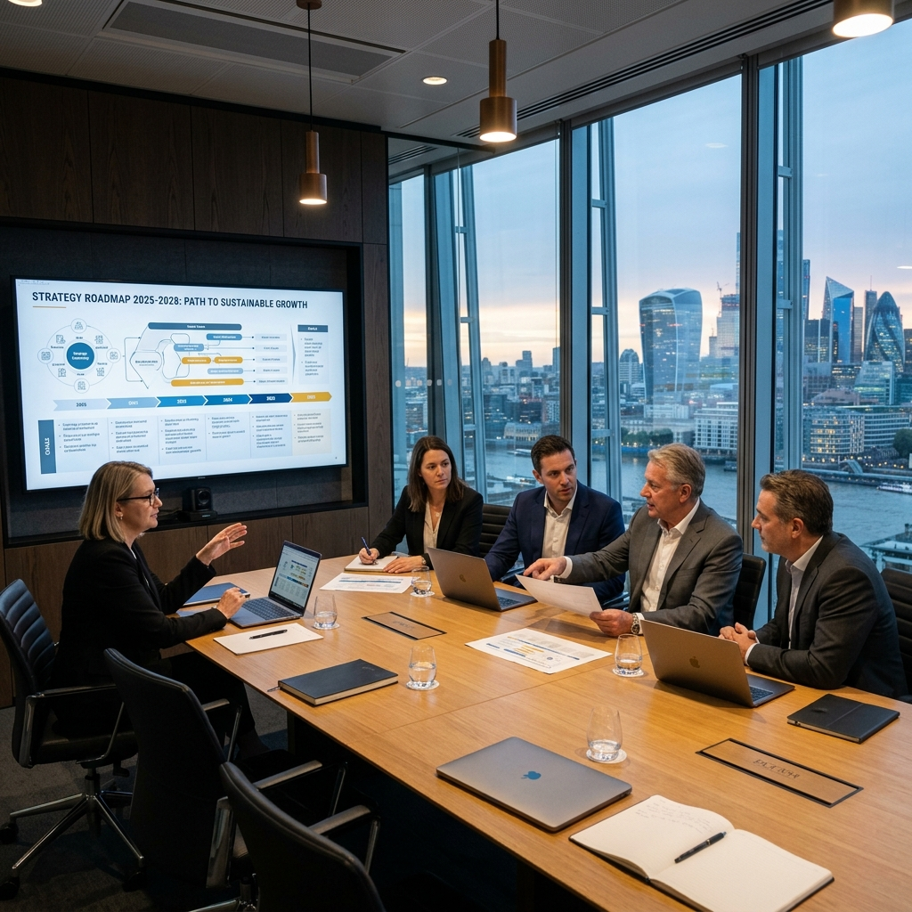

Measurable Outcomes
We partner with leading enterprises to build robust leadership structures. Review our portfolio of engagements where science meets strategy.

Scale-up CEO Capacity Optimization
We advised the founder of an enterprise software firm, restructuring their executive presence and team communication framework ahead of their Series C funding round.
Board-Led Transition at Meridian Logistics
Following the announced retirement of their long-standing chief officer, we mapped talent and coached the internal successor to secure business continuity.

C-Suite Post-M&A Alignment Summit
We designed a customized team alignment roadmap to eliminate post-merger governance drag and unify two distinct leadership cultures.

High-Potential Pipeline at Vanguard Industries
We designed a multi-modular training and development pathway to accelerate high-potential directors into operational VPs across 14 divisions.

Executive Diagnostic Audits at Apex Holdings
Deployed standard Hogan leadership assessment profiles and multi-rater qualitative loops to map behavior risk indicators for corporate officers.

Family-Office Governance & Continuity Design
Advised board committees on wealth governance rules, talent identification pools, and succession transition timelines for a premier holding group.
How We Verify Case Metrics
Our advisory is based strictly on empirical behavioral science and objective organizational markers. We track case metrics across three key parameters:
-
01 / Transition Timeline Control
We measure success by mapping the speed of candidate selections and successor alignment milestones relative to initial board targets.
-
02 / Multi-Rater Feedback Index
We audit changes in leadership perception by repeating diagnostic 360 evaluations six and twelve months post-engagement.
-
03 / Organizational Velocity
We compile corporate metric indices (officer retention, project delivery timeline adherence) to link coaching actions with commercial outcomes.

Uncover Governance Vulnerabilities
Partner with Aurelius managing directors to run a preliminary alignment audit. We evaluate succession readiness, board communication gaps, and key leadership team friction.